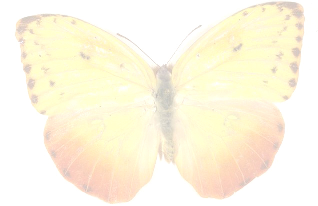

Az éjjeli lepkék
Az éjjeli lepkék| Nappali lepke jellemzői | |
|---|---|
|  | A nappali lepkék felismerhetők arról, hogy napközben aktívak, általában élénk színűek, csápjuk bunkós, és nyugalomban a szárnyukat hátuk fölött összecsukva tartják. |
| A nappali lepkék hátsó szárnyának töve kiszélesedő, megerősített, és repülés közben alátámasztja az elülső szárnyat. | | Az éjjeli lepkék |